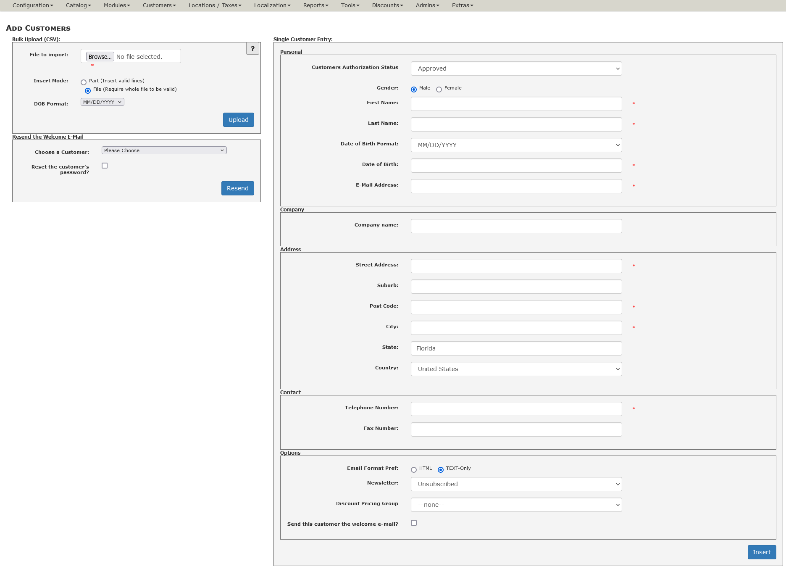

Copyright (c) 2012-2021, Vinos de Frutas Tropicales (lat9)
Current support thread at Zen Cart Forums: www.zen-cart.com/showthread.php?199629-Add-Customers-from-Admin-2-0-%281-5-0-and-later%29-Support-Thread. This software is provided for your use under the GNU General Public License.
This plugin allows an admin user to add customers manually (or via CSV file bulk upload) to their shop's database, optionally sending each customer a "welcome" email that includes their password. Once you have installed the plugin (see below), you can access the plugin via your admin's Customers->Add Customer. The initial screen for the tool looks like this:
The top left-hand side of the tool is used to perform a bulk-upload of customers via a Comma-Separated Values (CSV) file, the bottom left-hand side of the tool is used to resend a customer their "Welcome E-Mail" and the right-hand side of the tool is used to enter customers one-by-one.
The Bulk Upload feature allows you to create a CSV file on another computer and then Upload that file to perform a "Bulk Upload" of customers into your database. That file's format is described by add_customers_formatting_csv.html (opens in a new window).
Before you choose your upload file, choose the Insert Mode; this mode tells the tool what to do if errors are present in the file's data:
Next, choose the format to be applied to the dob fields present in the uploaded file. Choose from one of the drop-down menu selections: YYYY/MM/DD, MM/DD/YYYY, YYYY-MM-DD, MM-DD-YYYY, YYYY/DD/MM, DD/MM/YYYY, YYYY-DD-MM, or DD-MM-YYYY.
Use this part of the tool to re-send the selected customer their "Welcome E-Mail", optionally resetting their login password at the same time. Choose a customer from the drop-down list of all customers who have not yet logged into your store, optionally checking the box to reset their login password and then click "Resend".
Note: If all registered customers have previously logged into your store, the drop-down box will contain only "Please Choose" and no customer-selection will be possible.
Use this part of the tool if you only have a few customers to add. Many of the fields' values are/are not displayed based on your admin's Configuration settings as are the minimum acceptable values. In each case, the table below describes which Configuration settings control the field … and how.
| Field Name | Description |
|---|---|
| Customers Authorization Status | Choose a value from the drop-down menu. |
| Gender | If Customer Details->Email Salutation is set to true, the value is displayed and you must choose one of the Male or Female radio buttons; otherwise, the field is not displayed and the default database value is used. |
| First Name | This field is always displayed. Its minimum acceptable length is controlled by Minimum Values->First Name; if that value is 0, this field's value is optional. |
| Last Name | This field is always displayed. Its minimum acceptable length is controlled by Minimum Values->Last Name; if that value is 0, this field's value is optional. |
| Date of Birth | If Customer Details->Date of Birth is set to true, this field is displayed along with the "Date of Birth Format" drop-down menu. The default format is based on the defined value DATE_FORMAT_SHORT, present in primary language file for your admin's active language selection (e.g. /YOUR_ADMIN/includes/languages/english.php) and can be one of YYYY/MM/DD, MM/DD/YYYY, YYYY-MM-DD, MM-DD-YYYY, YYYY/DD/MM, DD/MM/YYYY, YYYY-DD-MM, or DD-MM-YYYY. |
| E-Mail Address | This field is always displayed. Its minimum acceptable length is controlled by Minimum Values->Email Address. However, regardless of minimum length, the value must be a "proper" email address and must not already be used by another customer in your database. |
| Company | If Customer Details->Company is set to true, the value is displayed and its minimum acceptable length is controlled by Minimum Values->Company; otherwise, the field is not displayed and the default database value is used. |
| Street Address | This field is always displayed. Its minimum acceptable length is controlled by Minimum Values->Street Address; if that value is 0, this field's value is optional. |
| Suburb | If Customer Details->Address Line 2 is set to false, this field is not displayed; otherwise, the field is displayed but its value is optional. |
| City | This field is always displayed. Its minimum acceptable length is controlled by Minimum Values->City; if that value is 0, this field's value is optional. |
| Post Code | This field is always displayed. Its minimum length is controlled by Minimum Values->Postcode; if that value is 0, this field's value is optional. In addition, if the "Country" is set to one of Canada, Great Britain, or the United States then the Post Code value is checked for a valid zip/post code in those three countries. |
| Country | This field is always displayed as a drop-down menu that contains all the countries supported by your store. Choose a value from the drop-down menu; the default value is the one you have selected in Customer Details->Create Account Default Country ID. Note: When you change the "Country", the screen will refresh and the "State" field will be updated for the currently-selected country. |
| State | This field is displayed only if Customer Details->State is set to true. If the currently-selected "Country" has zones, this field is displayed as a drop-down menu containing all zones for that country; otherwise, this field is displayed as an input field whose minimum acceptable length is controlled by Minimum Values->State (if that value is 0, this field's value is optional). |
| Telephone | This field is always displayed. Its minimum acceptable length is controlled by Minimum Values->Telephone Number; if that value is 0, this field's value is optional. If the field's value is not optional, the value entered is also validated as a "world phone number". |
| Fax Number | If Customer Details->Fax Number is set to true, this field is displayed. This field's value is always optional. |
| Email Format Pref | This field is always displayed. Choose one of the radio-buttons, either HTML or Text-only; the default selection is based on Customer Details->Customer Default Email Preference. |
| Newsletter | Specifies whether or not the customer is to be subscribed to the newsletter for your store, either Yes or No; the default selection is controlled by the setting in Configuration->Customer Details->Show Newsletter Checkbox. |
| Discount Pricing Group | This field is always displayed. The drop-down menu contains all discount pricing groups you have created using your admin's Customers->Group Pricing tool. If no pricing groups are selected, only one selection ("-none-") will be available. |
| Customer Referral 1st Discount Coupon | This field is displayed only if Customer Details->Customers Referral Status is set to 2 (Customer can add during create account or edit if blank); when displayed, the field's value is optional. |
| Send this customer the welcome e-mail? | Check this box if you want the customer you're adding to receive a "Welcome E-Mail" that includes his/her account default password. If GV Coupons->New Signup Discount Coupon ID# is not set to 0 (None), this e-mail will include the information associated with the discount coupon selected. If GV Coupons->New Signup Gift Voucher Amount is set to a non-zero value, a new gift voucher will be created for this customer and this e-mail will include the information associated with this gift voucher. |
There are no core-file overwrites in this plugin, but you should always backup your cart's database and files prior to making any changes.
Copy the following files to your cart's installation, after renaming the "YOUR_ADMIN" directory to match your custom admin's name:
This plugin also includes the following files that should not be copied to your installation:
First, delete the files that were copied to your zen-cart installation's admin directories then use your admin's Tools->Run SQL Patches to run the file add_customers_uninstall.sql.
This plugin is based on v1.08 of the Add Customers from Admin add-on developed for the 1.3.x versions of Zen Cart®, but this version (v3.0.0 and later) has been modified for v1.5.7 and later only.
/YOUR_ADMIN/add_customers_backend.php is no longer used; see /YOUR_ADMIN/includes/classes/addCustomer.php.update_customer function.zen_create_PADSS_password function to generate a more secure temporary password.